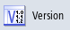

Ihre Vorlagen lesen Sie direkt in die Steuerung ein. Die Dateien wählen und importieren Sie je nach Konfiguration vom lokalen Laufwerk, Netzlaufwerk oder USB. Die Daten werden dann automatisch in folgenden Ordner kopiert: /oem/sinumerik/hmi/template/identity bzw. HMI-Daten/Vorlagen/Hersteller/Maschinenidentität.
Vorlagen
Sie haben die Möglichkeit, Dateien mit beliebigen Namen zu importieren. Der Inhalt der Dateien wird ausgewertet. Aus den enthaltenen Informationen wird der neue Dateiname abgeleitet.
Datei | Informationen |
|---|
ma_types.xml | Maschinentypen |
dealer.xml | Händlerdaten |
oem.xml | Herstellerdaten |
oemsubs.xml | Herstellerdaten einer Niederlassung |
user.xml | Endkundendaten |
Vorgehensweise
| | 1. | Wählen Sie den Bedienbereich "Diagnose" an. |
|  | 2. | Drücken Sie den Softkey "Version". Der Aufruf der Versionsanzeige nimmt einige Zeit in Anspruch. In der Dialogzeile wird Ihnen die Ermittlung der Daten in einer Fortschrittsanzeige angezeigt. |
  | 3 | Drücken Sie die Softkeys "Logbuch" und "Ändern". |
| | 4. | Drücken Sie den Softkey "Daten importieren". |
| | 5. | Wählen Sie das entsprechende Laufwerk und die gewünschte Datei aus. |
 | 6. | Drücken Sie den Softkey "OK". Die Datei wird automatisch an die richtige Stelle im System kopiert. Wenn die Vorlage nur einen Datensatz enthält, werden die Daten direkt in die Eingabefelder übernommen und gespeichert. |
 | 7. | Wenn bereits Daten in den Eingabefeldern vorhanden sind, bestätigen Sie das Überschreiben der Daten mit dem Softkey "Ja". |
| | 8. | Wenn die Vorlage mehrere Datensätze enthält, wählen Sie einen Datensatz aus der Liste. Die dazugehörigen Daten werden in die Eingabefelder übernommen. |
| | 9. | Drücken Sie den Softkey "OK". Die Auswahl bzw. die manuelle Änderung wird bestätigt und gespeichert. |